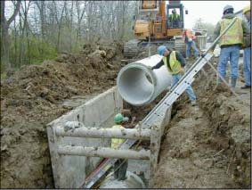
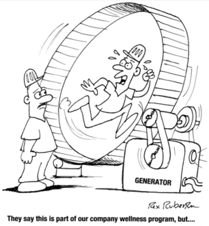

EXCAVATING AND TRENCHING
At the age of seven my parents said of my backyard hole digging, "Jim if you keep digging, you’ll dig right to China." That didn’t happen, but fortunately neither did a cave in.
Others have not been so lucky. Two years ago in Jackson, Mo a worker lost his life when he stepped out of the confines of a trench box he was working in and was struck by and partially trapped by material that fell into the trench. In Kansas City, trench walls collapsed and engulfed a victim working in a trench.
75-90% of injuries occur in trenches where no protective systems were used. 10%-50% of all trapped workers die before rescue.
The following are a few of the basic OSHA safety guidelines:
- Every excavation must have a Competent Person. The Competent Person is capable of identifying existing and predictable hazards in the surroundings or working conditions and has the authority to take prompt corrective measures to eliminate them.
- A means of egress ( a way out) such as a ladder or ramp for excavations four (4) feet or more in depth are required.
- Excavations 5 feet or deeper require mandatory protection from cave-ins by an adequate protective system. This system can consist of a trench box or benching or sloping the sides of the trench. Which system is utilized depends on soil classification and that decision is made by the competent person after inspection of the site.
- All excavations are to have a two foot clear area at the top edge to help protect employees from excavated or other materials or equipment that could pose a hazard by falling or rolling into the excavation.
- Employees exposed to traffic shall wear a high visibility safety vest or like garment.
Complete requirements for excavation’s are found in OSHA Standards for the Construction Industry Subpart P of 29 CFR Part 1926 and can be viewed on OSHA’s web site.
EQUAL EMPLOYMENT OPPORTUNITY (EEO) REFRESHER
N.B. West Contracting Company is morally and legally committed to non-discrimination and affirmative action in employment.
It is the policy of this company to promote the realization of equal employment opportunity through a positive continuing program of specific practices designed to ensure the full realization of equal employment opportunity.
Notices are posted at each of the company’s facilities for viewing by all employees advising them of their rights under the laws EEOC enforces and their right to be free from retaliation.
These notices include, but are not limited to the following:
- Title VII of the Civil Rights Act of 1964 (Title VII) prohibits race, color, religion, sex, and national origin discrimination.
- Age Discrimination in Employment Act of 1967 (ADEA) prohibits age discrimination against individuals who are forty (40) years of age or older.
- Title I of the Americans with Disabilities Act of 1990 (ADA) prohibits employment discrimination against qualified individuals with disabilities.
- Equal Pay Act of 1963 (EPA) prohibits wage discrimination between men and women in substantially equal jobs within the same establishment.
Mr. Harvey Alderson is the company’s Equal Opportunity Officer. Mr. Alderson will handle all complaints, which allege job discrimination in reference to the United States Fed. Equal Employment Opportunity Laws.
Mr. Alderson can be reached by telephone at 314 962 3145 ext. 129. The office address is 2780 Mary Avenue, St. Louis, MO 63144.
Additional info can be found on the EEOC’s web site.
WHAT'S WRONG WITH THE PICTURE?
Study the picture to see if you can identify any safety concerns?
See question one (1) on the survey and pick the best answer.
STEVE JACKSON
Steve, processing some rock and sand samples. (And you thought you had a lot of dishes to do at home).
I am head of Quality Control for the company’s three asphalt plants. I have been working for West a little over two years now. Previously, I worked QC for Pace Construction and before that a project manager.
The main lab is located at the Bourbon asphalt plant with one lab at each of the other two facilities.
Safety hazards?
We have many safety hazards in the labs. Hazards include dust from splitting rock samples and cutting cores of asphalt. Noise from the tile saw and other testing equipment. Eye and face protection when cutting cores and working with chemicals. Hand and arm protection from possible burns from the three industrial ovens, one that reaches a temperature of 1,000 degrees F and potential radiation concerns from the asphalt content nuclear gauge instrument as well as jobsite concerns of struck-bys from equipment and traffic when we pull samples from the actual highway paving projects, to name a few.

LAST MONTH’S POSTCARD QUESTIONS
Best answers are bolded for your review below.
- Which answer(s) describe(s) safety concerns for the man on the stepladder?
- awkward load
- improper foot wear
- blocking potential exit route and uneven/unstable base
- all of the above
- Name four benefits of walking for - yourself? (Note: Everyone’s answers were good. (Here’s my top four)
- Can be done in short bouts
- Increases aerobic capacity
- Eases back pain
- Easy on joints
- Before starting to work on electrical circuit what should be done?
- Tell everyone what you are doing.
- De-energize the circuit
- Lockout, tagout and test it.
- b & c